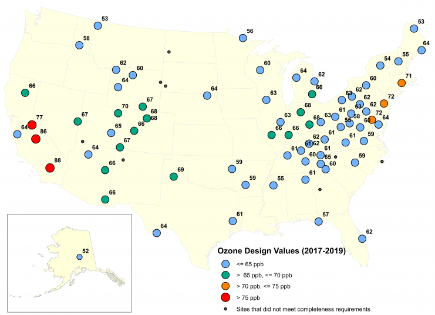
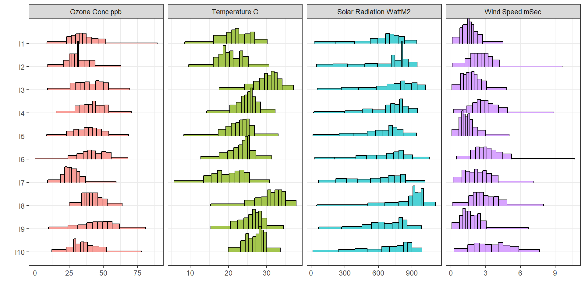
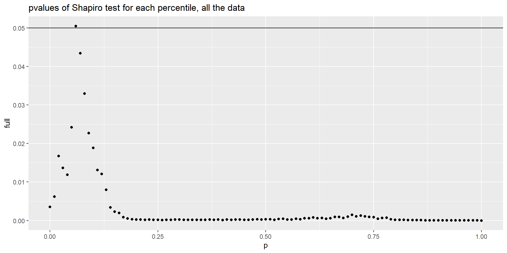

This is an R Markdown presentation showing an application of the two-components regression model (A. Irpino and Verde 2015) on the OzoneFull dataset which is available in the HistDAWass package. We used the HistDAWass package and the therein build functions for the regression analysis.
For installing and loading the package in your environment launch the following code:
The OzoneFull dataset is a MatH object, namely, a table of histogram-valued data, representing aggregate raw data downloaded from the Clean Air Status and Trends Network (CASTNET) (<http://java.epa.gov/castnet/>), an air-quality monitoring network of the United States, designed to provide data to assess trends in air quality, atmospheric deposition and ecological effects due to changes in air pollutant emissions.
We selected data on the ozone concentration in 78 USA sites among those depicted in Fig for which the monitored data were complete (i.e., without missing values for each of the selected characteristics).
CASTNET network sites map
Ozone is a gas that can cause respiratory diseases. In the literature, several studies reported evidence of the relation between the ozone concentration level and temperature, wind speed and the solar radiation (see, for example,(Dueñas et al. 2002)).
Given the distribution of temperature (\(X_{1}\)) (degrees Celsius), the distribution of solar radiation (\(X_{2}\)) (Watts per square meter) and the distribution of wind speed (\(X_{3}\)) (meters per second), the main objective is to predict the distribution of ozone concentration (\(Y\)) (Particles per billion) using a linear model. CASTNET collects hourly data and, as the period of observation, we chose the summer season of 2010 and the central hours of the days (10 a.m.–5 p.m.).
We collected the histograms of the values of each site observed for the four variables. The histograms were constructed using 100 equi-frequent bins, namely, we have bins of different widths but of constant frequency. The histogram representation of varying bin-width histograms in not always pleasant, we plot the data using only ten equi-frequent bins. We show the first 5 of 78 sites.
Each cell of the data table contains a histogram. We see the first three rows of the matrix
| ST_ID | Bin | p | Bin1 | p1 | Bin2 | p2 | Bin3 | p3 |
|---|---|---|---|---|---|---|---|---|
| I1 | 8.77-16.62 | 0.01 | 8.45-11.65 | 0.01 | 25.29- 75.88 | 0.01 | 0.10-0.35 | 0.01 |
| I1 | 16.62-17.54 | 0.01 | 11.65-13.06 | 0.01 | 75.88-108.27 | 0.01 | 0.35-0.41 | 0.01 |
| I1 | 17.54-18.42 | 0.01 | 13.06-13.83 | 0.01 | 108.27-111.43 | 0.01 | 0.41-0.50 | 0.01 |
| I1 | 18.42-18.90 | 0.01 | 13.83-14.12 | 0.01 | 111.43-114.09 | 0.01 | 0.50-0.55 | 0.01 |
| I1 | …-… | 0.01 | …-… | 0.01 | …-… | 0.01 | …-… | 0.01 |
| I1 | 65.68-67.78 | 0.01 | 28.87-29.23 | 0.01 | 914.12-933.30 | 0.01 | 3.52-3.79 | 0.01 |
| I1 | 67.78-89.60 | 0.01 | 29.23-30.18 | 0.01 | 933.30-942.00 | 0.01 | 3.79-4.48 | 0.01 |
| I2 | 9.00-15.00 | 0.01 | 9.50- 9.75 | 0.01 | 49.00- 56.16 | 0.01 | 0.10-0.55 | 0.01 |
| I2 | 15.00-17.00 | 0.01 | 9.75-10.38 | 0.01 | 56.16- 71.50 | 0.01 | 0.55-0.80 | 0.01 |
| I2 | 17.00-18.00 | 0.01 | 10.38-10.60 | 0.01 | 71.50-102.84 | 0.01 | 0.80-0.80 | 0.01 |
| I2 | 18.00-19.00 | 0.01 | 10.60-11.24 | 0.01 | 102.84-133.40 | 0.01 | 0.80-0.90 | 0.01 |
| I2 | …-… | 0.01 | …-… | 0.01 | …-… | 0.01 | …-… | 0.01 |
| I2 | 54.24-58.00 | 0.01 | 29.02-29.60 | 0.01 | 910.00-916.84 | 0.01 | 7.52-8.37 | 0.01 |
| I2 | 58.00-63.00 | 0.01 | 29.60-30.70 | 0.01 | 916.84-944.00 | 0.01 | 8.37-9.60 | 0.01 |
| I3 | 9.25-17.99 | 0.01 | 17.57-20.13 | 0.01 | 52.57- 78.67 | 0.01 | 0.08-0.26 | 0.01 |
| I3 | 17.99-20.31 | 0.01 | 20.13-20.63 | 0.01 | 78.67-105.48 | 0.01 | 0.26-0.38 | 0.01 |
| I3 | 20.31-21.41 | 0.01 | 20.63-21.13 | 0.01 | 105.48-116.96 | 0.01 | 0.38-0.41 | 0.01 |
| I3 | 21.41-22.20 | 0.01 | 21.13-21.61 | 0.01 | 116.96-140.19 | 0.01 | 0.41-0.45 | 0.01 |
| I3 | …-… | 0.01 | …-… | 0.01 | …-… | 0.01 | …-… | 0.01 |
| I3 | 62.38-64.11 | 0.01 | 36.10-36.42 | 0.01 | 979.18- 990.02 | 0.01 | 3.77-4.07 | 0.01 |
| I3 | 64.11-69.45 | 0.01 | 36.42-37.07 | 0.01 | 990.02-1020.00 | 0.01 | 4.07-4.81 | 0.01 |
We start computing the Frechét mean of each distributional variable using the \(L_2\) Wassertein distance as in (R. Irpino A.and Verde 2015)
Output shows the first five and the last five bins due to eccesive length
X p
Bin_1 [14.789-19.479) 0.01
Bin_2 [19.479-21.567) 0.01
Bin_3 [21.567-22.872) 0.01
Bin_4 [22.872-23.912) 0.01
Bin_5 [23.912-24.894) 0.01
... ... ...
Bin_96 [57.865 ; 58.948) 0.01
Bin_97 [58.948 ; 60.278) 0.01
Bin_98 [60.278 ; 61.979) 0.01
Bin_99 [61.979 ; 64.515) 0.01
Bin_100 [64.515 ; 71.095) 0.01
mean = 41.2147347282052 std = 9.96802979889176
Output shows the first five and the last five bins due to eccesive length
X p
Bin_1 [10.355-12.383) 0.01
Bin_2 [12.383-13.91) 0.01
Bin_3 [13.91-15.1) 0.01
Bin_4 [15.1-15.853) 0.01
Bin_5 [15.853-16.473) 0.01
... ... ...
Bin_96 [28.795 ; 29.106) 0.01
Bin_97 [29.106 ; 29.447) 0.01
Bin_98 [29.447 ; 29.888) 0.01
Bin_99 [29.888 ; 30.569) 0.01
Bin_100 [30.569 ; 31.602) 0.01
mean = 23.2805152974359 std = 3.76407404885491
Output shows the first five and the last five bins due to eccesive length
X p
Bin_1 [54.186-89.738) 0.01
Bin_2 [89.738-123.48) 0.01
Bin_3 [123.48-148.68) 0.01
Bin_4 [148.68-177.1) 0.01
Bin_5 [177.1-202.25) 0.01
... ... ...
Bin_96 [926.63 ; 934.72) 0.01
Bin_97 [934.72 ; 943.94) 0.01
Bin_98 [943.94 ; 955.36) 0.01
Bin_99 [955.36 ; 970.49) 0.01
Bin_100 [970.49 ; 997.58) 0.01
mean = 645.350728000001 std = 225.781773829828
Output shows the first five and the last five bins due to eccesive length
X p
Bin_1 [0.11386-0.36784) 0.01
Bin_2 [0.36784-0.52206) 0.01
Bin_3 [0.52206-0.62055) 0.01
Bin_4 [0.62055-0.70678) 0.01
Bin_5 [0.70678-0.77491) 0.01
... ... ...
Bin_96 [4.3248 ; 4.4692) 0.01
Bin_97 [4.4692 ; 4.6702) 0.01
Bin_98 [4.6702 ; 4.9502) 0.01
Bin_99 [4.9502 ; 5.4696) 0.01
Bin_100 [5.4696 ; 6.5707) 0.01
mean = 2.34883345512821 std = 1.09865034695591
The mean distributions for each variable
In Table [TAB:OZO_summarystat], we report the main summary statistics for the four histogram variables, while in Fig. [Fig: OZO_barycenters], we provide the four barycenters of the 78 sites for each variable. We note, for example, the different skewness of the barycenters. In general, when the barycenter is skewed, the observed distributions are in general skewed in the same direction. This is not in general true for symmetric barycenters, which can be generated both from left- and right-skewed distributions.
| Variable | Mean | Std | First_Q | Median | Third_Q | Skewness | Kurtosis |
|---|---|---|---|---|---|---|---|
| Ozone | 41.21 | 9.97 | 34.27 | 41.15 | 48.05 | 0.078 | 2.778 |
| Temperature | 23.28 | 3.76 | 21.04 | 23.71 | 25.93 | -0.596 | 3.393 |
| Solar Radiation | 645.35 | 225.78 | 496.05 | 701.63 | 826.56 | -0.715 | 2.580 |
| Wind Speed | 2.35 | 1.10 | 1.54 | 2.22 | 3.03 | 0.649 | 3.456 |
We show the covariances and correlations of the variables in the next two tables, and the standard deviations of the variables computed according to what is proposed in (R. Irpino A.and Verde 2015) :
# Covariance matrix
Cov_M<-WH.var.covar(OzoneFull)
knitr::kable(round(Cov_M,2), caption="Covariance matrix")| Ozone.Conc.ppb | Temperature.C | Solar.Radiation.WattM2 | Wind.Speed.mSec | |
|---|---|---|---|---|
| Ozone.Conc.ppb | 90.81 | 9.05 | 690.92 | 5.03 |
| Temperature.C | 9.05 | 14.76 | 197.71 | 0.72 |
| Solar.Radiation.WattM2 | 690.92 | 197.71 | 12866.55 | 65.47 |
| Wind.Speed.mSec | 5.03 | 0.72 | 65.47 | 1.73 |
| x | |
|---|---|
| Ozone.Conc.ppb | 9.53 |
| Temperature.C | 3.84 |
| Solar.Radiation.WattM2 | 113.43 |
| Wind.Speed.mSec | 1.31 |
| Ozone.Conc.ppb | Temperature.C | Solar.Radiation.WattM2 | Wind.Speed.mSec | |
|---|---|---|---|---|
| Ozone.Conc.ppb | 1.000 | 0.247 | 0.639 | 0.402 |
| Temperature.C | 0.247 | 1.000 | 0.454 | 0.143 |
| Solar.Radiation.WattM2 | 0.639 | 0.454 | 1.000 | 0.439 |
| Wind.Speed.mSec | 0.402 | 0.143 | 0.439 | 1.000 |
Now we estimate the model
\[ Y=\beta_0+\beta_1\mu_{X_1}+\beta_2\mu_{X_2}+\beta_3\mu_{X_3}+ \gamma_1{X^c_1}+\gamma_2{X^c_2}+\gamma_3{X^c_3}+\varepsilon \]
results<-WH.regression.two.components(OzoneFull,1,c(2:4))
knitr::kable(data.frame(Coeff.est.=round(results,3)),
caption="regression parameters")| Coeff.est. | |
|---|---|
| (AV_Intercept) | 2.927 |
| AV_Temperature.C | -0.346 |
| AV_Solar.Radiation.WattM2 | 0.070 |
| AV_Wind.Speed.mSec | 0.395 |
| CEN_Temperature.C | 0.915 |
| CEN_Solar.Radiation.WattM2 | 0.018 |
| CEN_Wind.Speed.mSec | 1.887 |
We compute the goodness of fit statistics
# we compute the expected distributions
expected<-WH.regression.two.components.predict(OzoneFull[,2:4],results)
# we compute the GOF measures
GOFS<- WH.regression.GOF(OzoneFull[,1],expected)
GOFS$RMSE_W
[1] 7.000022
$OMEGA
[1] 0.7423388
$PSEUDOR2
$PSEUDOR2$index
[1] 0.4604191
$PSEUDOR2$details
TotSSQ SSQ.R SSQ.E Bias SSQ.R.rel SSQ.E.rel
7083.3190671 4070.7089580 3822.0239212 -809.4138121 0.5746895 0.5395809
SSQ.bias.rel
-0.1142704 We perform a bootstrap estimates of the confidence intervals of the parameters using 1,000 replications
| model.est. | boot.mean.est. | bias | q.2.5 | q.97.5 | |
|---|---|---|---|---|---|
| (AV_Intercept) | 2.927 | 3.209 | -0.282 | -11.587 | 15.136 |
| AV_Temperature.C | -0.346 | -0.352 | 0.006 | -0.813 | 0.179 |
| AV_Solar.Radiation.WattM2 | 0.070 | 0.070 | 0.000 | 0.051 | 0.090 |
| AV_Wind.Speed.mSec | 0.395 | 0.378 | 0.017 | -1.301 | 1.942 |
| CEN_Temperature.C | 0.915 | 0.911 | 0.004 | 0.474 | 1.371 |
| CEN_Solar.Radiation.WattM2 | 0.018 | 0.018 | 0.000 | 0.012 | 0.024 |
| CEN_Wind.Speed.mSec | 1.887 | 1.973 | -0.087 | 1.044 | 3.118 |
Reading the bootstrap results, we may assert that the ozone concentration distribution of a site depends on the mean solar radiation, where for each \(\Delta Watt/m^{2}\) a \(0.070\;(ppb)\) variation of the ozone concentration mean level is expected, while in general we cannot say that the mean levels of temperature and wind speed induce a significant variation of the ozone concentration level(\(95\%\) bootstrap confidence intervals include the zero). Furthermore, the variability of the ozone concentration is almost the same of the temperature(\(0.928\)); a unitary variation in the variability of the solar radiation induces a variation of \(0.018\;(ppb)\) and a variation in the variability of the wind speed causes an increase in the variability of \(1.958\;(ppb)\).
Res<-matrix(0,n,length(expected@M[1,1][[1]]@x))
C<-matrix(0,n,length(expected@M[1,1][[1]]@x)-1)
R<-matrix(0,n,length(expected@M[1,1][[1]]@x)-1)
for(i in 1:n){
Res[i,]<-expected@M[i,1][[1]]@x-OzoneFull@M[i,1][[1]]@x
R[i,]<-diff(expected@M[i,1][[1]]@x-OzoneFull@M[i,1][[1]]@x)/2
C[i,]<-(Res[i,1:(length(Res[i,])-1)]+
Res[i,2:(length(Res[i,]))])/2
}
SDRES<-sqrt((0.01*(sum(C^2)-sum(colMeans(C)^2)+
1/3*(sum(R^2)-sum(colMeans(R)^2))))/n)
Res_st<-data.frame(ID=c(1:n),Res/SDRES)
Res<-data.frame(ID=c(1:n),Res)In general the standardized error functions are inside the \(\pm2\sigma\) band. Looking at the point-wise boxplots, we see that in general the average error function is close to the zero line, suggesting that the process generating the error functions has zero mean. Also the boxplots seem to suggest that the process have constant variance in \([0;1]\).
We note that stations \(I23\), \(I41\), and \(I69\) present error functions which have the most part of the values far more than \(\pm2\sigma\).
We compute the Shapiro test for each percentile with and without outliers.
It seems that removing the outliers the process is almost Gaussian after \(p=0.07\).
Software for multivariade regression of Distributional SD, ESTP Cologne 14-16 May 2024